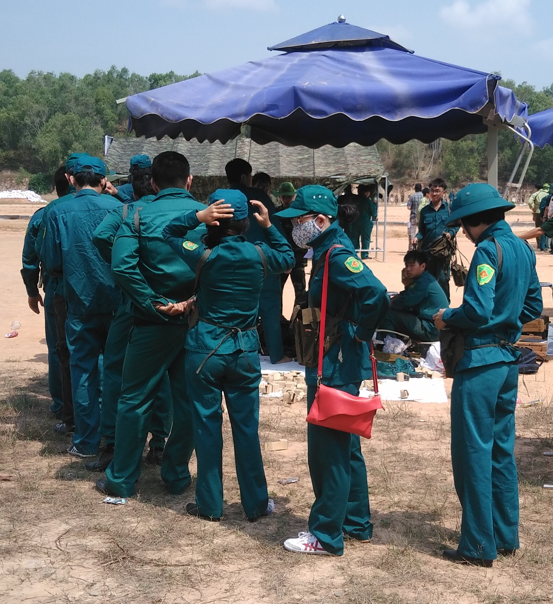
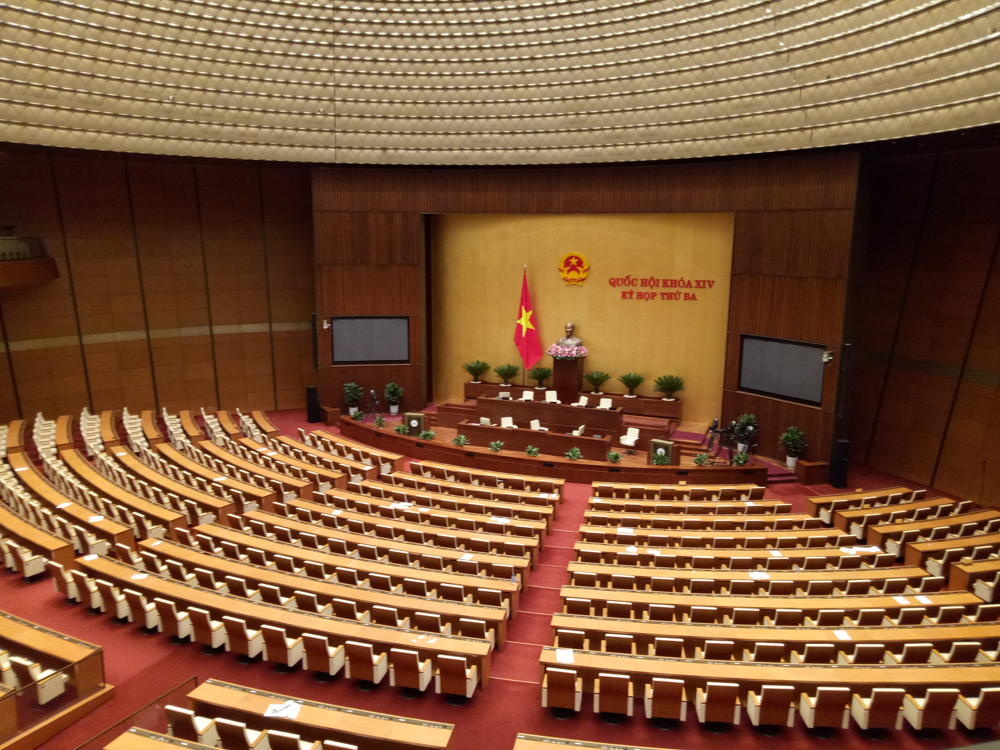

Tài liệu học tập dẫn chứng cuộc xung đột quân sự nào nổ ra từ ngày 24 tháng 2 năm 2022 và kéo dài đến nay như một minh chứng sống động, lời cảnh tỉnh sâu sắc về tính khốc liệt, dai dẳng của chiến tranh hiện đại?
Cuộc xung đột quân sự tại khu vực Trung Đông.
Cuộc xung đột quân sự giữa Nga và Ukraine.
Cuộc chiến tranh thông tin và kinh tế giữa các nước lớn tại Châu Á.
Cuộc xung đột vũ trang sắc tộc tại khu vực Bắc Phi.
Tài liệu học tập dẫn chứng cuộc xung đột quân sự nào nổ ra từ ngày 24 tháng 2 năm 2022 và kéo dài đến nay như một minh chứng sống động, lời cảnh tỉnh sâu sắc về tính khốc liệt, dai dẳng của chiến tranh hiện đại?
Cuộc xung đột quân sự tại khu vực Trung Đông.
Cuộc xung đột quân sự giữa Nga và Ukraine.
ĐÁP ÁN ĐÚNGCuộc chiến tranh thông tin và kinh tế giữa các nước lớn tại Châu Á.
Cuộc xung đột vũ trang sắc tộc tại khu vực Bắc Phi.
Theo Khoản 4 Điều 2 Luật Quốc phòng số 22/2018/QH14, "Chiến tranh nhân dân" được định nghĩa là cuộc chiến tranh toàn dân, toàn diện, lấy lực lượng nào làm nòng cốt?
Lực lượng bộ đội chủ lực kết hợp với các binh đoàn cơ động mạnh.
Lực lượng Công an nhân dân và các tổ chức chính trị - xã hội.
Lực lượng vũ trang nhân dân.
Toàn thể quần chúng nhân dân lao động ở trong nước và nước ngoài.
Theo Khoản 4 Điều 2 Luật Quốc phòng số 22/2018/QH14, "Chiến tranh nhân dân" được định nghĩa là cuộc chiến tranh toàn dân, toàn diện, lấy lực lượng nào làm nòng cốt?
Lực lượng bộ đội chủ lực kết hợp với các binh đoàn cơ động mạnh.
Lực lượng Công an nhân dân và các tổ chức chính trị - xã hội.
Lực lượng vũ trang nhân dân.
ĐÁP ÁN ĐÚNGToàn thể quần chúng nhân dân lao động ở trong nước và nước ngoài.
Khi phân tích về các nhóm đối tượng tác chiến, tài liệu học tập lưu ý điều gì về mối quan hệ giữa các thế lực thù địch bên ngoài và lực lượng phản động bên trong?
Chúng hoạt động hoàn toàn độc lập, tách rời và không bao giờ thỏa hiệp với nhau vì khác biệt quốc tịch.
Lực lượng phản động bên trong thường tạo môi trường, tạo cớ để lực lượng thù địch bên ngoài thực hiện ý đồ chiến lược xâm lược.
Lực lượng bên ngoài chỉ tập trung vào mặt trận kinh tế, còn lực lượng bên trong chỉ bạo loạn vũ trang.
Các đối tượng này chỉ liên kết với nhau sau khi chiến tranh xâm lược quy mô lớn đã kết thúc thắng lợi.
Khi phân tích về các nhóm đối tượng tác chiến, tài liệu học tập lưu ý điều gì về mối quan hệ giữa các thế lực thù địch bên ngoài và lực lượng phản động bên trong?
Chúng hoạt động hoàn toàn độc lập, tách rời và không bao giờ thỏa hiệp với nhau vì khác biệt quốc tịch.
Lực lượng phản động bên trong thường tạo môi trường, tạo cớ để lực lượng thù địch bên ngoài thực hiện ý đồ chiến lược xâm lược.
ĐÁP ÁN ĐÚNGLực lượng bên ngoài chỉ tập trung vào mặt trận kinh tế, còn lực lượng bên trong chỉ bạo loạn vũ trang.
Các đối tượng này chỉ liên kết với nhau sau khi chiến tranh xâm lược quy mô lớn đã kết thúc thắng lợi.
Trong tính chất toàn diện của chiến tranh nhân dân bảo vệ Tổ quốc, mặt trận đấu tranh nào giữ vai trò chủ yếu, có ý nghĩa quyết định trực tiếp đến cục diện và kết cục chiến tranh?
Mặt trận đấu tranh ngoại giao pháp lý quốc tế.
Mặt trận đấu tranh kinh tế, sản xuất và thực hành tiết kiệm.
Mặt trận đấu tranh chính trị, tư tưởng và tâm lý.
Mặt trận đấu tranh vũ trang, giành thắng lợi trên chiến trường.
Trong tính chất toàn diện của chiến tranh nhân dân bảo vệ Tổ quốc, mặt trận đấu tranh nào giữ vai trò chủ yếu, có ý nghĩa quyết định trực tiếp đến cục diện và kết cục chiến tranh?
Mặt trận đấu tranh ngoại giao pháp lý quốc tế.
Mặt trận đấu tranh kinh tế, sản xuất và thực hành tiết kiệm.
Mặt trận đấu tranh chính trị, tư tưởng và tâm lý.
Mặt trận đấu tranh vũ trang, giành thắng lợi trên chiến trường.
ĐÁP ÁN ĐÚNGMột trong những đặc điểm nổi bật về hình thái của chiến tranh nhân dân bảo vệ Tổ quốc hiện đại (nếu xảy ra) dưới tác động của vũ khí tầm xa, tác chiến điện tử và không gian mạng là gì?
Chiến trường phân tuyến rõ ràng theo ranh giới địa lý hành chính của các tỉnh.
Hình thái chiến tranh nhìn chung không phân tuyến rõ ràng; ranh giới giữa hậu phương và tiền tuyến khó phân biệt.
Thời gian chiến tranh bắt buộc phải kéo dài vô thời hạn trên tất cả các địa bàn.
Kẻ địch chỉ sử dụng duy nhất tiến công trên bộ mà hoàn toàn bỏ qua hỏa lực đường không.
Một trong những đặc điểm nổi bật về hình thái của chiến tranh nhân dân bảo vệ Tổ quốc hiện đại (nếu xảy ra) dưới tác động của vũ khí tầm xa, tác chiến điện tử và không gian mạng là gì?
Chiến trường phân tuyến rõ ràng theo ranh giới địa lý hành chính của các tỉnh.
Hình thái chiến tranh nhìn chung không phân tuyến rõ ràng; ranh giới giữa hậu phương và tiền tuyến khó phân biệt.
ĐÁP ÁN ĐÚNGThời gian chiến tranh bắt buộc phải kéo dài vô thời hạn trên tất cả các địa bàn.
Kẻ địch chỉ sử dụng duy nhất tiến công trên bộ mà hoàn toàn bỏ qua hỏa lực đường không.
Theo quan điểm của Đảng về tổ chức lực lượng toàn dân đánh giặc, lực lượng nào giữ vai trò làm nòng cốt cho phong trào toàn dân đánh giặc ở ngay địa bàn cơ sở?
Bộ đội chủ lực.
Lực lượng Dự bị động viên.
Dân quân tự vệ.
Bộ đội địa phương.

Theo quan điểm của Đảng về tổ chức lực lượng toàn dân đánh giặc, lực lượng nào giữ vai trò làm nòng cốt cho phong trào toàn dân đánh giặc ở ngay địa bàn cơ sở?
Bộ đội chủ lực.
Lực lượng Dự bị động viên.
Dân quân tự vệ.
ĐÁP ÁN ĐÚNGBộ đội địa phương.
Tại sao trong chỉ đạo chiến tranh nhân dân, Đảng ta đề ra quan điểm phải chuẩn bị mọi mặt để đánh lâu dài, nhưng đồng thời phải ra sức thu hẹp không gian, rút ngắn thời gian của chiến tranh?
Vì ta muốn nhanh chóng chuyển giao chính quyền cho các tổ chức quốc tế can thiệp.
Vì đối phương thường áp đảo về sức mạnh quân sự, có thể thực hiện phương châm “đánh nhanh, giải quyết nhanh” nhằm đạt mục đích trước khi ta kịp huy động đầy đủ sức mạnh tổng hợp.
Vì vũ khí công nghệ cao của ta có ưu thế tuyệt đối vượt trội, có thể tiêu diệt đối phương ngay trong giờ đầu.
Vì không gian địa lý của nước ta quá hẹp, không đủ địa bàn để bố trí các lực lượng vũ trang.
Tại sao trong chỉ đạo chiến tranh nhân dân, Đảng ta đề ra quan điểm phải chuẩn bị mọi mặt để đánh lâu dài, nhưng đồng thời phải ra sức thu hẹp không gian, rút ngắn thời gian của chiến tranh?
Vì ta muốn nhanh chóng chuyển giao chính quyền cho các tổ chức quốc tế can thiệp.
Vì đối phương thường áp đảo về sức mạnh quân sự, có thể thực hiện phương châm “đánh nhanh, giải quyết nhanh” nhằm đạt mục đích trước khi ta kịp huy động đầy đủ sức mạnh tổng hợp.
ĐÁP ÁN ĐÚNGVì vũ khí công nghệ cao của ta có ưu thế tuyệt đối vượt trội, có thể tiêu diệt đối phương ngay trong giờ đầu.
Vì không gian địa lý của nước ta quá hẹp, không đủ địa bàn để bố trí các lực lượng vũ trang.
Khung cập nhật Văn kiện Đại hội đại biểu toàn quốc lần thứ XIV của Đảng (2026) đặt ra yêu cầu mới nào đối với công tác lý luận quân sự trong tình hình mới?
Ngừng nghiên cứu nghệ thuật quân sự truyền thống để chuyển sang học tập hoàn toàn học thuyết quân sự phương Tây.
Chỉ tập trung phát triển các vũ khí thô sơ để tiết kiệm tối đa ngân sách kinh tế quốc gia.
Không ngừng bổ sung, phát triển lý luận về nghệ thuật chiến tranh nhân dân bảo vệ Tổ quốc cho phù hợp với điều kiện chiến tranh công nghệ cao, chiến tranh thông tin, chiến tranh không gian mạng.
Giao toàn bộ nhiệm vụ dự báo tình hình an ninh mạng cho các doanh nghiệp công nghệ tư nhân nước ngoài.

Khung cập nhật Văn kiện Đại hội đại biểu toàn quốc lần thứ XIV của Đảng (2026) đặt ra yêu cầu mới nào đối với công tác lý luận quân sự trong tình hình mới?
Ngừng nghiên cứu nghệ thuật quân sự truyền thống để chuyển sang học tập hoàn toàn học thuyết quân sự phương Tây.
Chỉ tập trung phát triển các vũ khí thô sơ để tiết kiệm tối đa ngân sách kinh tế quốc gia.
Không ngừng bổ sung, phát triển lý luận về nghệ thuật chiến tranh nhân dân bảo vệ Tổ quốc cho phù hợp với điều kiện chiến tranh công nghệ cao, chiến tranh thông tin, chiến tranh không gian mạng.
ĐÁP ÁN ĐÚNGGiao toàn bộ nhiệm vụ dự báo tình hình an ninh mạng cho các doanh nghiệp công nghệ tư nhân nước ngoài.
Nghệ thuật quân sự Việt Nam cấu trúc thế trận thông qua sự gắn bó biện chứng giữa hai phương thức tiến hành chiến tranh nào?
Chiến tranh du kích ban đêm và Chiến tranh thông tin kinh tế tầm xa.
Chiến tranh nhân dân địa phương và Chiến tranh bằng các binh đoàn chủ lực.
Tác chiến không gian mạng độc lập và Phòng thủ dân sự phi vũ trang.
Đấu tranh ngoại giao song phương và Trấn áp bạo loạn lật đổ chính trị.
Nghệ thuật quân sự Việt Nam cấu trúc thế trận thông qua sự gắn bó biện chứng giữa hai phương thức tiến hành chiến tranh nào?
Chiến tranh du kích ban đêm và Chiến tranh thông tin kinh tế tầm xa.
Chiến tranh nhân dân địa phương và Chiến tranh bằng các binh đoàn chủ lực.
ĐÁP ÁN ĐÚNGTác chiến không gian mạng độc lập và Phòng thủ dân sự phi vũ trang.
Đấu tranh ngoại giao song phương và Trấn áp bạo loạn lật đổ chính trị.
Nhằm đối phó hiệu quả với thủ đoạn tiến công hỏa lực từ bên ngoài kết hợp kích động bạo loạn từ bên trong theo phương thức “trong đánh ra, ngoài đánh vào” của địch, biện pháp tổ chức lực lượng vũ trang đặt ra là gì?
Tách rời hoàn toàn hoạt động của Quân đội nhân dân và Công an nhân dân để tránh chồng chéo.
Chỉ huấn luyện tác chiến đối ngoại cho bộ đội chủ lực, bỏ qua phương án tác chiến tại các địa bàn hậu phương.
Các lực lượng vũ trang (Quân đội, Công an, Dân quân tự vệ) phải có kế hoạch, phương án tác chiến cụ thể cho cả hai loại tình huống, phối hợp chặt chẽ để xử lý dứt điểm các "điểm nóng".
Chuyển toàn bộ dân cư vùng biên giới vào sâu trong nội địa ngay từ thời bình.
Nhằm đối phó hiệu quả với thủ đoạn tiến công hỏa lực từ bên ngoài kết hợp kích động bạo loạn từ bên trong theo phương thức “trong đánh ra, ngoài đánh vào” của địch, biện pháp tổ chức lực lượng vũ trang đặt ra là gì?
Tách rời hoàn toàn hoạt động của Quân đội nhân dân và Công an nhân dân để tránh chồng chéo.
Chỉ huấn luyện tác chiến đối ngoại cho bộ đội chủ lực, bỏ qua phương án tác chiến tại các địa bàn hậu phương.
Các lực lượng vũ trang (Quân đội, Công an, Dân quân tự vệ) phải có kế hoạch, phương án tác chiến cụ thể cho cả hai loại tình huống, phối hợp chặt chẽ để xử lý dứt điểm các "điểm nóng".
ĐÁP ÁN ĐÚNGChuyển toàn bộ dân cư vùng biên giới vào sâu trong nội địa ngay từ thời bình.